2023 年 1 月考的學測社會考科中，挑出的歷史題：單選 19 題、非選擇題 3 題，共 48 分。建議限時 35 分鐘。題目是大考中心原卷截圖。
兩種寫法：模擬考全部寫完再交卷，最接近考場；練習每寫一題就對答案、看解析。作答會保留在這台裝置，交卷後的分數會自動記到「歷屆試題與時間配置」的答對率紀錄。
第 5 題單選・2 分早期台灣
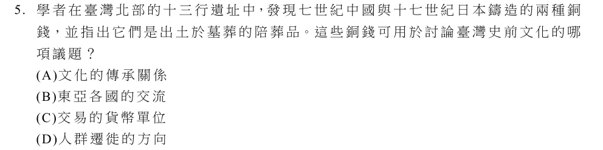
題目可左右滑動；點一下圖片可縮成整頁寬度。
正確答案 B。十三行遺址出土七世紀中國錢與十七世紀日本錢，表示史前臺灣與東亞各地已有往來交流。
第 6 題單選・2 分傳統東亞
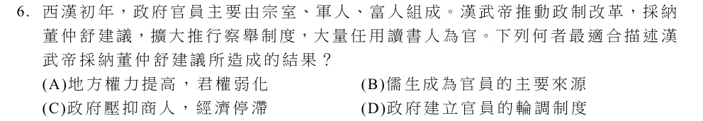
題目可左右滑動；點一下圖片可縮成整頁寬度。
正確答案 B。漢武帝採納董仲舒建議擴大察舉，大量任用讀書人，儒生成為官員的主要來源。
第 7 題單選・2 分近代革命
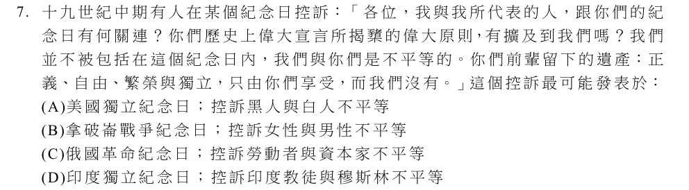
題目可左右滑動；點一下圖片可縮成整頁寬度。
正確答案 A。十九世紀中期在美國獨立紀念日，黑人廢奴運動者控訴：獨立宣言揭櫫的自由平等並未及於黑人。
第 8 題單選・2 分早期台灣
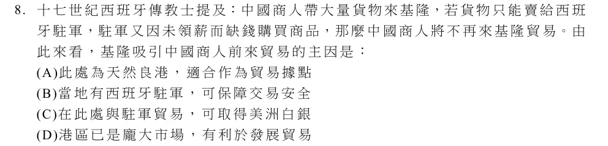
題目可左右滑動；點一下圖片可縮成整頁寬度。
正確答案 C。西班牙駐軍以美洲白銀購買貨物。中國商人來基隆是為了取得白銀，駐軍沒錢，商人就不來了。
第 9 題單選・2 分傳統東亞
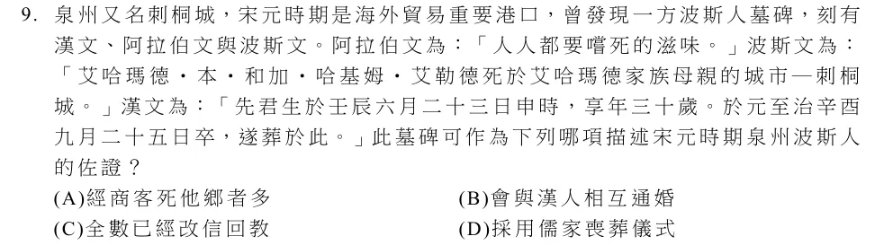
題目可左右滑動；點一下圖片可縮成整頁寬度。
正確答案 B。墓碑寫死者死於「艾哈瑪德家族母親的城市―刺桐城」，表示母親是泉州人，可佐證波斯人與漢人通婚。
第 10 題單選・2 分清領時期
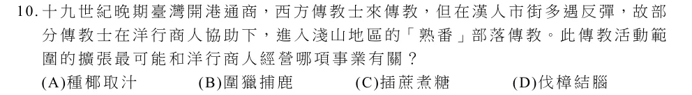
題目可左右滑動；點一下圖片可縮成整頁寬度。
正確答案 D。淺山地區產樟樹，開港後洋行經營樟腦（伐樟熬腦）事業，傳教士也隨之進入淺山的熟番部落。
第 11 題單選・2 分日治時期
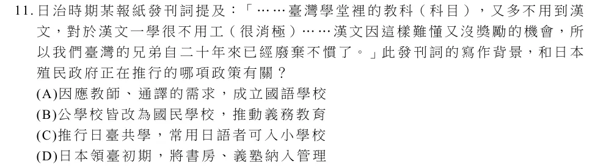
題目可左右滑動；點一下圖片可縮成整頁寬度。
正確答案 C。領臺約二十年後，學校教科很少用漢文。1920 年代推行日臺共學，常用日語者可進入小學校，漢文更受冷落。
第 12 題單選・2 分傳統東亞
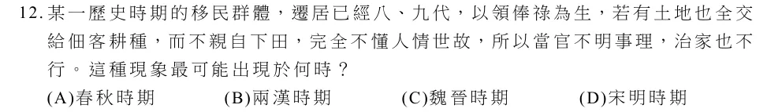
題目可左右滑動；點一下圖片可縮成整頁寬度。
正確答案 C。世代領俸祿、土地交佃客耕種、不親自下田，是魏晉南北朝門第社會中南遷士族的寫照。
第 13 題單選・2 分近代東亞
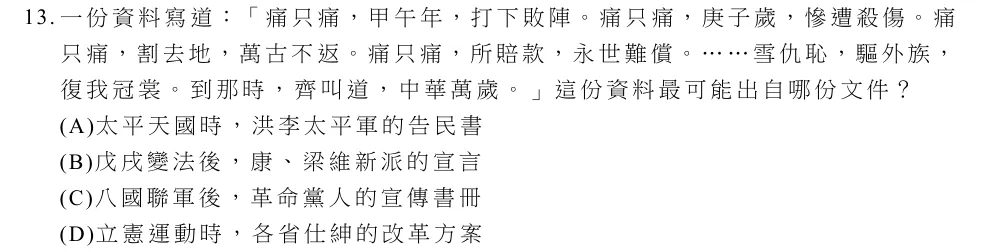
題目可左右滑動；點一下圖片可縮成整頁寬度。
正確答案 C。提到甲午、庚子的恥辱，又喊「驅外族、復我冠裳」（反滿），是八國聯軍後革命黨人的宣傳。
第 14 題單選・2 分傳統東亞
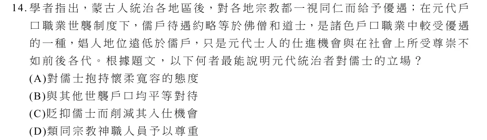
題目可左右滑動；點一下圖片可縮成整頁寬度。
正確答案 D。儒戶的待遇約等於佛僧和道士，可見元代把儒士視同宗教神職人員予以優遇。
第 15 題單選・2 分帝國主義到冷戰
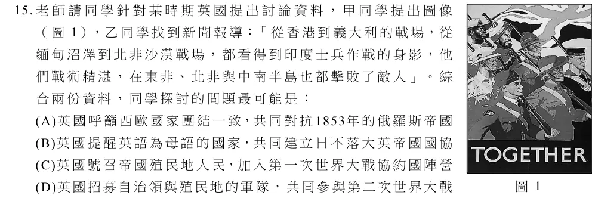
題目可左右滑動；點一下圖片可縮成整頁寬度。
正確答案 D。印度士兵在香港、義大利、緬甸、北非等地作戰，是英國動員殖民地軍隊參加第二次世界大戰。
第 16 題單選・2 分帝國主義到冷戰
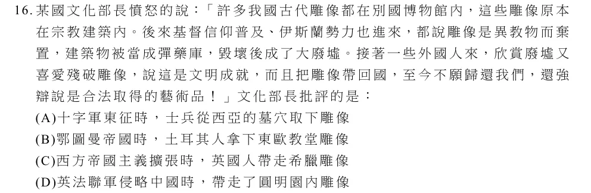
題目可左右滑動；點一下圖片可縮成整頁寬度。
正確答案 C。雕像原在神廟，後因基督教、伊斯蘭傳入而被棄置，又被外國人帶走，指希臘帕德嫩神廟的雕像被英國人帶走。
第 17 題單選・2 分古代到近代早期
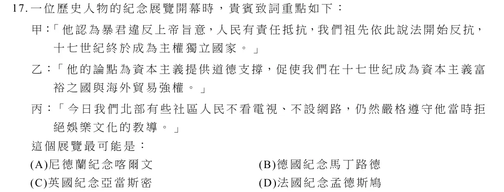
題目可左右滑動；點一下圖片可縮成整頁寬度。
正確答案 A。主張抵抗暴君、提供資本主義的道德支撐、教導拒絕娛樂，都是喀爾文教派的影響；尼德蘭據此反抗西班牙獨立。
題組 30-31（只收錄其中的歷史題）
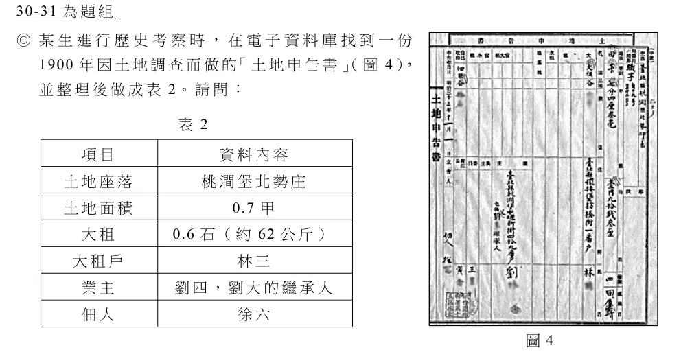
題目可左右滑動；點一下圖片可縮成整頁寬度。
第 30 題單選・2 分日治時期
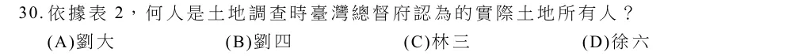
題目可左右滑動；點一下圖片可縮成整頁寬度。
正確答案 B。日治土地調查以小租戶為業主（實際所有人）。劉四是業主，所以是劉四。
第 31 題單選・2 分清領時期
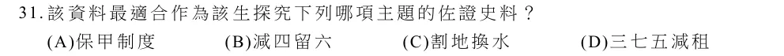
題目可左右滑動；點一下圖片可縮成整頁寬度。
正確答案 B。申告書同時記載大租與業主，可用來探究劉銘傳清賦時「減四留六」以小租戶為業主的政策。
題組 42-45（只收錄其中的歷史題）
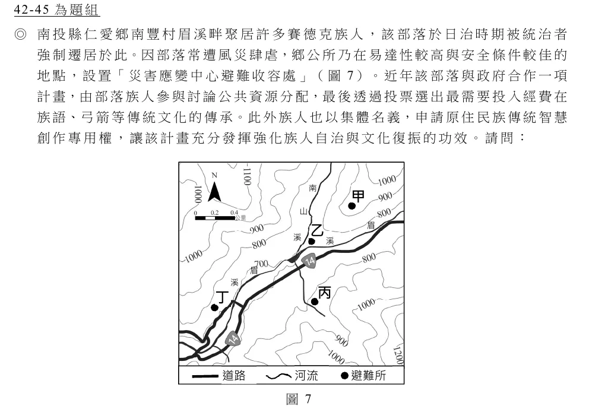
題目可左右滑動；點一下圖片可縮成整頁寬度。
第 43 題單選・2 分日治時期
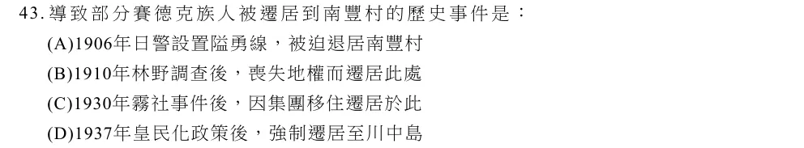
題目可左右滑動；點一下圖片可縮成整頁寬度。
正確答案 C。1930 年霧社事件後，總督府強制部分賽德克族人集團移住到今日的南豐、清流一帶。
題組 48-49（只收錄其中的歷史題）
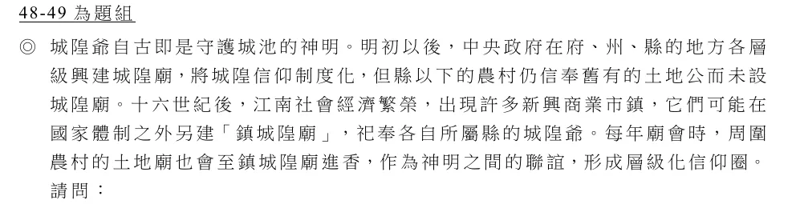
題目可左右滑動；點一下圖片可縮成整頁寬度。
第 48 題單選・2 分傳統東亞
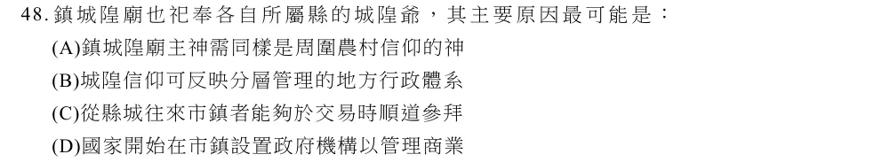
題目可左右滑動；點一下圖片可縮成整頁寬度。
正確答案 B。鎮城隍廟祀奉所屬縣的城隍，反映府、州、縣分層管理的地方行政體系。
第 49 題非選擇題・3 分傳統東亞
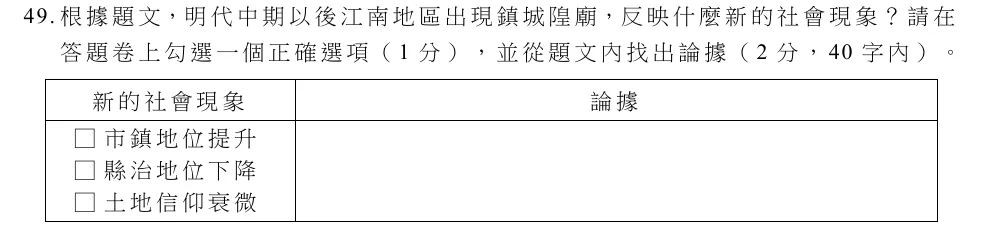
題目可左右滑動；點一下圖片可縮成整頁寬度。
勾選一項（1 分，自動批改）
參考答案（摘自大考中心評分原則）：勾選「市鎮地位提升」。論據：市鎮在國家體制之外另建鎮城隍廟，或鎮城隍廟每年廟會接受周圍農村土地廟的進香。
對照參考答案，替文字部分自評（2 分）：
題組 55-56（只收錄其中的歷史題）
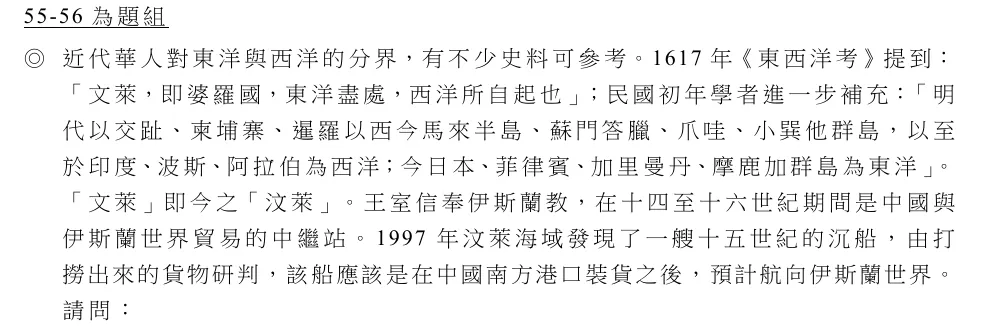
題目可左右滑動；點一下圖片可縮成整頁寬度。
第 55 題單選・2 分傳統東亞
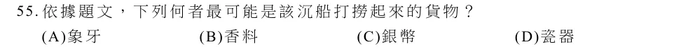
題目可左右滑動；點一下圖片可縮成整頁寬度。
正確答案 D。船在中國南方港口裝貨後要航向伊斯蘭世界，最可能載的是中國的瓷器。
題組 57-59（只收錄其中的歷史題）
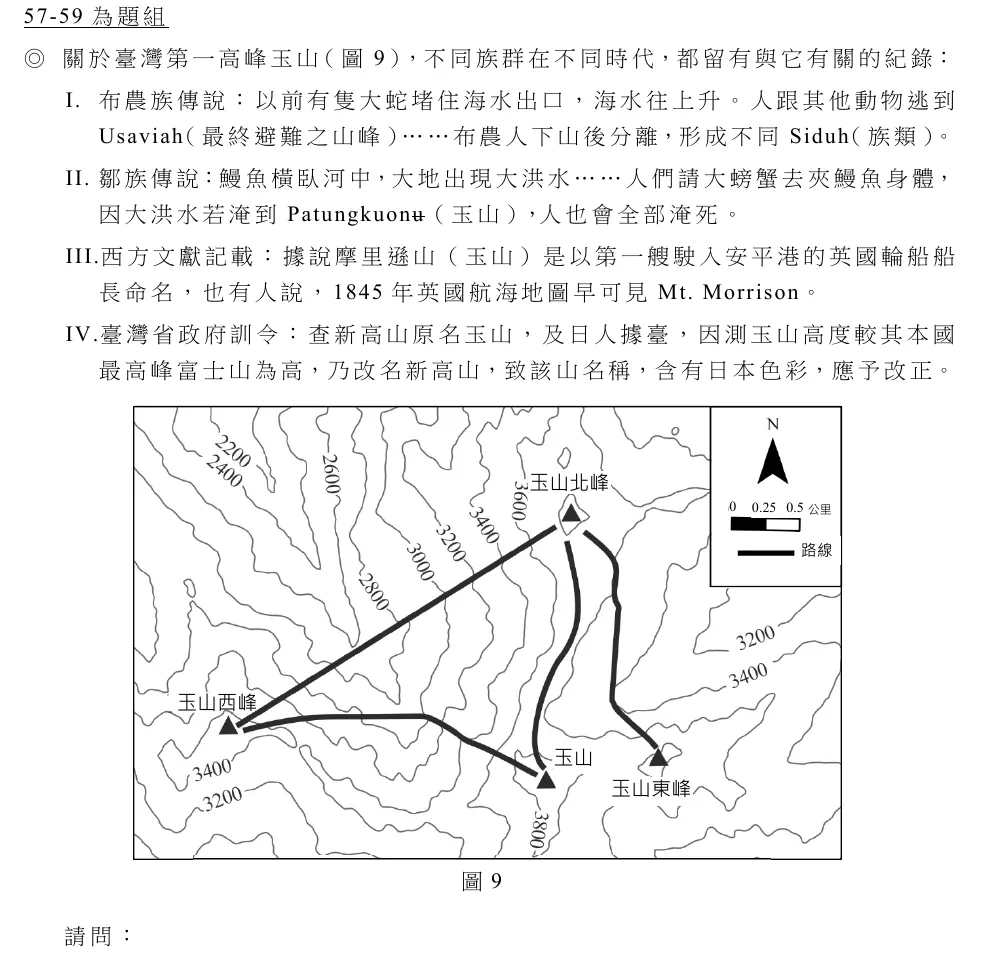
題目可左右滑動；點一下圖片可縮成整頁寬度。
第 59 題非選擇題・3 分早期台灣
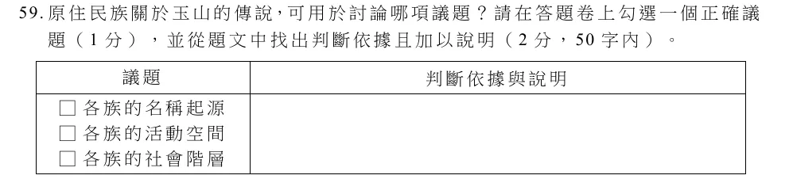
題目可左右滑動；點一下圖片可縮成整頁寬度。
勾選一項（1 分，自動批改）
參考答案（摘自大考中心評分原則）：勾選「各族的活動空間」。依據：布農族、鄒族兩則傳說都提到玉山是避難之處，顯示兩族早已在玉山一帶活動。
對照參考答案，替文字部分自評（2 分）：
題組 60-62（只收錄其中的歷史題）
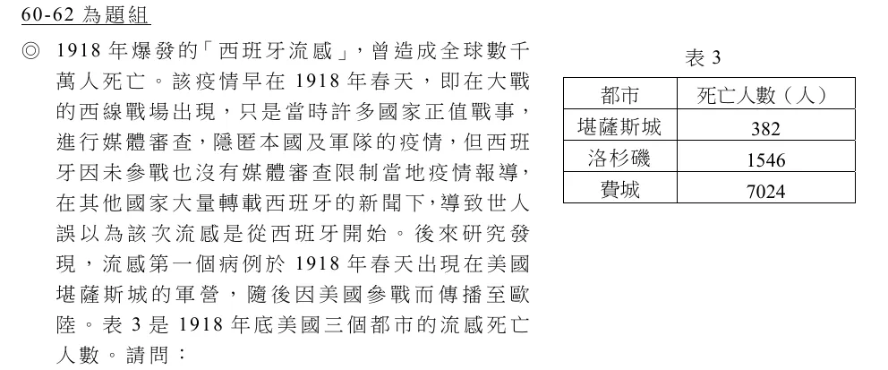
題目可左右滑動；點一下圖片可縮成整頁寬度。
第 61 題非選擇題・4 分史料判讀
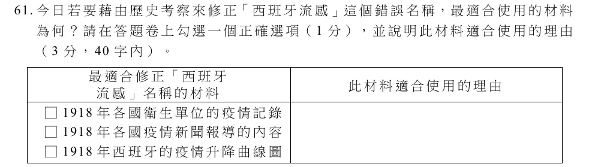
題目可左右滑動；點一下圖片可縮成整頁寬度。
勾選一項（1 分，自動批改）
參考答案（摘自大考中心評分原則）：勾選「各國衛生單位的疫情記錄」。理由：比對各國疫情紀錄的時間先後，找出最早的染疫個案，就能證明西班牙不是流感的爆發地。
對照參考答案，替文字部分自評（3 分）：
題組 63-65（只收錄其中的歷史題）
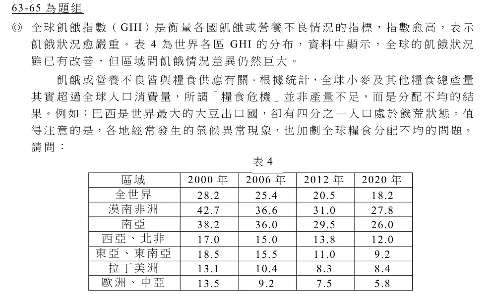
題目可左右滑動；點一下圖片可縮成整頁寬度。
第 63 題單選・2 分帝國主義到冷戰
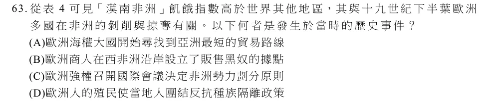
題目可左右滑動；點一下圖片可縮成整頁寬度。
正確答案 C。十九世紀下半葉歐洲列強召開柏林會議（1884–1885），決定瓜分非洲的原則。